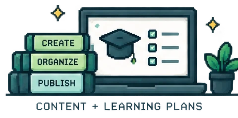
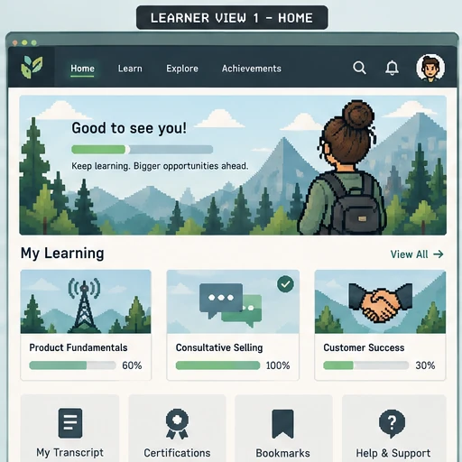

Learning Platform Operations
LMS Administration
I manage the structures, access, support, testing, and reporting that keep learning usable after it enters the LMS.
AbsorbDoceboMigration + UATLearner Support
System Operations
One system, six connected areas of work.
Select an area to see the operational focus and the LMS view it affects.
Content + Learning Plans
Keep the catalog organized and the path intentional.
I configure courses, catalogs, prerequisites, learning plans, ownership, assignments, and publishing patterns so learners see a clear route instead of a content dump.
Operational checkThe right content appears in the right sequence for the right audience.

Learner Journey
I test the path, not just the course.
The learner has to move through the whole system without losing the next step.
Find
Make the right learning easy to discover.
Catalog structure, audience rules, search, naming, and permissions all shape whether the learner can find the intended experience.

Featured LMS Case Study
Migration work across setup, testing, and support.
See how I configured learning structures, tested employee, partner, and customer routes, documented issues, and supported launch.
View the case study →Other Work
The platform is one part of the learning system.
These portfolio sections show the learning, quality, and automation work connected to the LMS.
Learning Experience
Instructional Design
Course, pathway, microlearning, live-training, and performance-support work built around learner decisions.
Explore instructional design →AI Quality
AI Training and Evaluation
Output evaluation, source grounding, rubric scoring, calibration, and actionable evaluator feedback.
Explore AI evaluation →Systems + Automation
System Integrations and Workflows
Automation, analysis, browser workflows, and reporting that support learning operations.
Explore systems work →